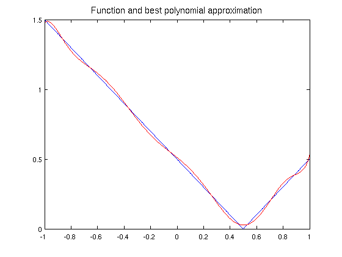
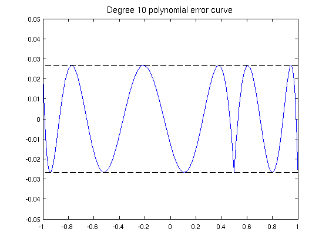
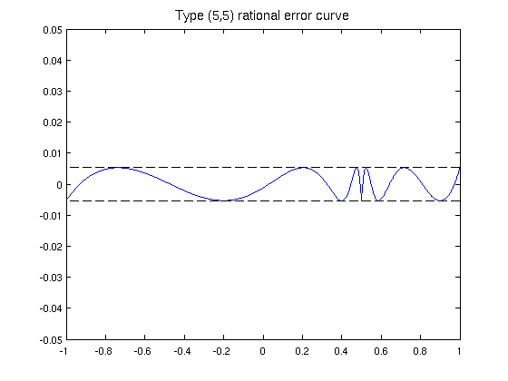

Best approximation with the Remez command
Nick Trefethen, September 2010
(Chebfun example approx/BestApprox.m)
Chebfun's REMEZ command, written by Ricardo Pachon, can compute best (i.e. infinity-norm or minimax) approximations of a real function on a real interval. For example, here is an absolute value function on [-1,1] and its best approximation by a polynomial of degree 10:
x = chebfun('x'); f = abs(x-0.5); [p,err] = remez(f,10); LW = 'linewidth'; FS = 'fontsize'; fs = 14; figure, plot(f,'b',p,'r',LW,1.6) title('Function and best polynomial approximation',FS,fs)
Here is the error curve, with 12 points of equioscillation:
figure, plot(f-p,LW,1.6), hold on plot([-1 1],err*[1 1],'--k',LW,1) plot([-1 1],-err*[1 1],'--k',LW,1) ylim([-.05 .05]) title('Degree 10 polynomial error curve',FS,fs)
In Chebfun Version 3, REMEZ could only compute polynomial approximations, but Version 4 introduced some capabilities with rational approximations too. For example, here is the error curve for type (5,5) best rational approximation of the same function f, plotted on the same scale. Note that there are again 12 points of equioscillation, but this time, they are more closely clustered near the singularity.
[p,q,rh,err] = remez(f,5,5); hold off, plot(f-p./q,LW,1.6), hold on plot([-1 1],err*[1 1],'--k',LW,1) plot([-1 1],-err*[1 1],'--k',LW,1) ylim([-.05 .05]) title('Type (5,5) rational error curve',FS,fs)
Warning: Remez algorithm did not converge after 20 iterations to the tolerance 1.1e-14.
For rational approximation, Chebfun's REMEZ command is currently not very robust. An often better alternative is CF approximation; see the CF command.
References:
[1] R. Pachon and L. N. Trefethen, Barycentric-Remez algorithms for best polynomial approximation in Chebfun, BIT Numerical Mathematics 49 (2009), 721-741.
[2] J. van Deun and L. N. Trefethen, A robust implementation of the Caratheodory-Fejer approximation, BIT Numerical Mathematics 51 (2011), 1039-1050.
[3] L. N. Trefethen, Approximation Theory and Approximation Practice, draft book available at http://www.maths.ox.ac.uk/chebfun/ATAP/.